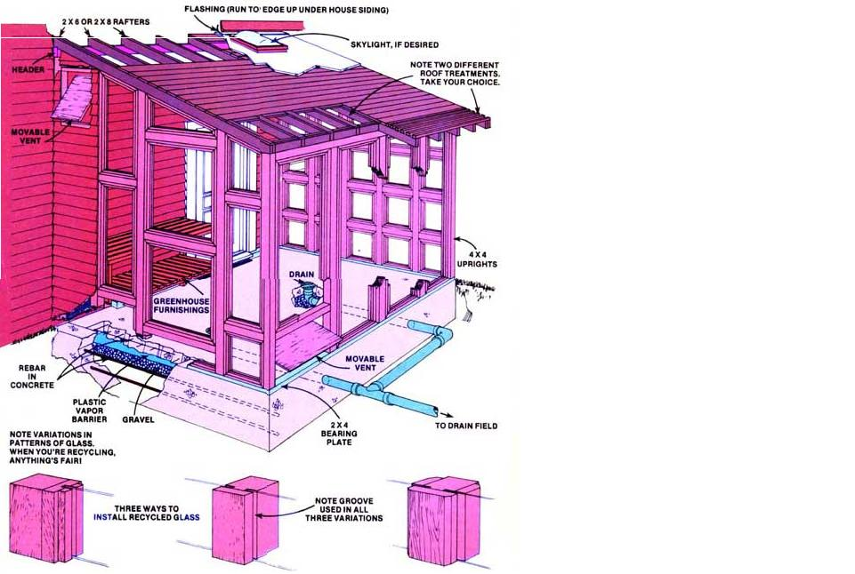
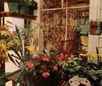
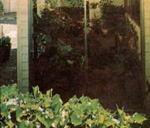
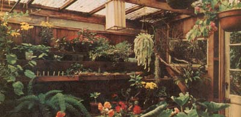

For decades, the height of gardening and "food self-sufficiency" luxury has been the private greenhouse. Unfortunately-or, perhaps, foolishly-too many of us have traditionally regarded a family greenly greenhouse as just that ... a luxury that "maybe" we'll be able to afford "someday".
Internationally recognized greenhouse gardening authority Jack Kramer doesn't agree with that line of thought at all. "Far more people than realize it can have a greenhouse right now," says Jack. "And that includes you. Prefabbed units that attach to an existing residence are becoming more reasonably priced and more popular every day. And if a readymade kit is too expensive or too sterile for you ... well, it's a snap to design and build your own attractive conservatory from low-cost new and salvaged materials!"
Some of us (far more than have thought about it) can afford to buy and erect a prefabricated greenhouse,' and some of us can't. But even if you include yourself in the latter group, that's still no reason to do without your very own plant conservatory.
Homemade greenhouses-just like homemade food-can be even better than the "professionally" designed kind. Furthermore, when you sketch up and build your own, you can make absolutely certain that it'll be both the exact size and the exact shape you want. Best of all, you can calculate the layout and construction of your personal plant palace so that the finished structure will be both [1] distinctive and [2] a building that works with-rather than against-nature.
For too many years, in my opinion, greenhouse manufacturers have been saying, "if you add a plant place to your house, make sure you put it on the south side of the existing structure." That's a good suggestion ... but hardly mandatory.
I've seen excellent greenhouses filled with healthy plants attached to the east, west, and even north faces of homes. (Indeed: If you plan to grow orchids, you'll find a northern exposure ideal.)
And by all means, do figure on a lean-to construction. It will put the greenhouse in close proximity to the rest of your living space, add both beauty and a new feeling of openness to that space, and-by eliminating the need for one wall on the new structure-cut the conservatory's cost dramatically. (You're really in luck if your house's perimeter has an "L" that you can nestle the add-on greenhouse into. If it does, you'll be able to complete the glassed-in room by constructing only two walls and a roof.)
We all, of course, start off wanting an absolutely huge place for our plants. This, however, really isn't necessary. Did you realize, for instance, that with careful staging (benches and tables) you can accommodate over 100 plants in a greenhouse measuring just 8 X 10 feet? I know you can because I've done it.
Generally, then, a conservatory measuring 10 X 12 or 10 X 16 is all you'll need to add a real touch of elegance to your house. And do consider the height of your glassed-in addition. In the first place, there's nothing like a tall ceiling to give your personal plant palace that old-fashioned conservatory look we all love. And, in the second, you'll find a high roof line essential if you ever decide to mix a few big and gorgeous tropical beauties in with your smaller potted plants.
When you're planning your structure's top light, do not-I implore you!-do not make the greenhouse's roof all transparent glass or plastic. If you do, the conservatory will be far too hot in the summer and too cold during the winter. There's no need to admit that much sunlight anyway. Almost any plant you'll ever want to raise will do fine with 30% top light ... even if the illumination is admitted through skylights or plastic bubbles.
For a handsome, durable plant room floor that resists both stains and water, use concrete. For what it does, it's very inexpensive ... and you can pour it yourself.
Bricks-when laid on a level base of sand-also make a good greenhouse floor. And, while they may cost you more than concrete (unless you salvage the bricks from a demolished building), there's no question that most homeowners find it easier to set bricks in sand than to pour and trowel concrete.
In a pinch, cinders or gravel can be spread several inches deep directly on the ground as temporary greenhouse flooring. Neither is nearly as satisfying over the long haul as concrete-or bricks embedded in either sand or mortar-however. If used at all, neither cinders nor gravel should be thought of as anything more than stopgaps that will eventually be replaced by something more durable.
You can buy new lumber and sashes for your conservatory's walls and roof if you like ... but recycled doors, windows, boards, and beams can be just as satisfactory, can look just as good, and most certainly can cost a great deal less. If you can't scrounge up such used materials yourself, try finding what you need at salvage yards and bargain centers. And pick up your recycled lumber, doors, and windows first. It's much easier and far less expensive to construct as much of the greenhouse as possible from recycled materials and then fill in around them with new ... than to try to work the other way around.
It will probably take more time and muscle-but not necessarily more money-to put in the base for your conservatory than it'll take to construct all the rest of the add-on room. For this reason and because of the foundation's importance (after all, the footings do have to hold up everything else in the building), you may prefer to have this part of the greenhouse done by professionals.
On the other hand, If you decide to tackle the base of the conservatory yourself, here are a few tips to get you started:
[1] Don't make a move until you've checked out your local building codes and thoroughly understand them. Few things in our modern life are more discouraging than having an inspector tell you that you'll have to tear out something you've just built because you didn't construct it exactly to code.
And remember: Despite their seemingly nit-picking qualities from time to time, those codes are designed for your protection. If you know nothing about the frost line in your area, for instance, you may wonder why the local code specifies that all footings must be set six inches deeper into the ground than you placed yours ... until the night a hard freeze cracks your new foundation so badly that it must be replaced.
[2] The easiest way to lay out the footings for your add-on greenhouse is just the way the professionals do it: Drive stakes into the ground and run a chalk line from one marker to another to indicate where the walls of the conservatory will go.
[3] When you're satisfied that you've laid out your plant room as accurately and as squarely as possible, dig a trench two feet wide and one foot deep (or as wide and as deep as your local construction code dictates) along the perimeter of the proposed site.
[4] The concrete footings themselves-which should be a minimum of eight inches wide-can then be "formed up and leveled" in this trench. You can make your own forms from 3/4-inch plywood ... or rent prefabbed forms from a local rent-all, contractor, or cement supplier.
[5] The footings should be reinforced-again, to code-with steel rods or "rebar" tied together both horizontally and vertically inside the foundation forms before the concrete is poured.
[6] Remember to leave 1/4- to 1/2 inch "D" anchor bolts protruding from the top of the poured footings-and spaced to match the bearing plate and/or vertical posts that will fasten to them-so that the walls of your addition can later be securely attached to the room's foundation. You should also remember to leave two-inch drainage holes-spaced about four feet apart-in the foundation of the lean-to greenhouse.
[7] Once the footings are in and have cured sufficiently, remove their forms and backfill the foundation with gravel and/or dirt in accordance with local codes. You may also have to install tile or gravel drainage channels leading away from the drain holes that you left through the footing walls.
The floor of your conservatory-if you make it concrete-must be leveled and formed up in much the same way that the room's foundation was. Dig out the whole area where the concrete is to be poured so that-when the surface of the finished floor is the height you want it-there will be room for at least four inches of concrete and four inches of gravel between that surface and the dirt underneath.
Be sure that the ground all the way across the area which will be covered by the floor is as level as you can make it, then dump or shovel in the gravel and smooth it out. The crushed stone is next topped with tar paper or a sheet of heavy builder's plastic (which will act as a vapor barrier), reinforcing bars and/ or mesh should be set, and the concrete poured, tamped, and screeded.
As the floor begins to cure, it must be troweled off smooth ... and after it has set up, the forms can be removed. If the weather is hot, the curing concrete should be covered with plastic or burlap and sprinkled with water from time to time to make it cure more slowly (which, it turn, will make the finished floor stronger).
You can purchase ready-mixed concrete for both the foundation and floor of the conservatory, or you can rent a powered mixer and mix your own (try one part cement, two parts sand, and two parts gravel with enough water to make the concrete easy to work but not overly "sloppy"). Work up each batch of mixer first, followed by the gravel and sand, and-finally-the cement. Mix the concrete thoroughly, then pour it and work it down quickly before it dries.
Redwood, cedar, cypress, and Douglas fir all resist rot and are all top choices for the wooden framing in your greenhouse. Use them if you can. And, if you can't, at least try for seasoned lumber that will grip nails tightly and which will not warp or twist. All the wood in the structure, of course, should be protected with any of the excellent heavy-duty preservatives or paints on the market today.
Although your local codes may have something to say about the matter, you'll generally find-for the kind of small add-on greenhouse we're talking about-that four or five 4 X 4-inch posts set up in the conservatory's "outside" wall are all the heavy vertical structural members you're going to need. Anchor them firmly to the lean-to's foundation by toenailing or bolting them to a 2 X 4 sill or bearing plate that is fastened to the concrete base with the "D" bolts mentioned earlier. It's a good idea to apply a layer of mastic between the footing and this sill to prevent capillary action from drawing water through the concrete and dampening (thereby rotting out) the bearing plate.
The horizontal beam running across the tops of the uprights in the accompanying drawing generally can be held to a 4 X 4 for four-foot spans, a 4 X 6 for spans of six feet, or-for eight-foot spans-a 4 X 8. Rafters, spaced either 18" or 24" on center, are usually heavy enough if made of 2 X 6's ... although-especially for flatter roofs-many folks like to use 2 X 8's for these members.
The simplest way to connect the upper ends of the lean-to greenhouse's rafters to your house is by resting and spiking them to the top of a 2 X 6 or, 2 X 8 ledger which, in turn, is securely spiked directly to the main structure's wall studs. (The best way to make absolutely certain that the ledger is spiked directly to those studs is by carefully removing one or two lengths of the house's siding and then fastening the ledger on in their place.)
Remember, too, that the rafters should be braced at each end and in the center (2 X 6 or 2 X 8 blocks work quite nicely) so they won't twist. Each rafter should be notched to fit the ledger strip on one end and the horizontal beam on the other. (Mark one rafter, cut it to fit, and then use the first as a pattern to mark the others.) Coat each joint-and every other wood-to-wood joint in the greenhouse-with sealing preservative before nailing the juncture together.
The glass or plastic with which you cover the walls and part of the roof of your conservatory can be purchased new or used ... or the material may even be entirely salvaged from wrecked houses, stores, barns, factories, and other old buildings. It really doesn't panes, old windows already set in frames, rigid panels of fiberglass, or commercial skylights and/or domes. Almost anything that will transmit light will work. Do, however, try to pick and choose panes of glass or plastic that will look attractive once they're in place ... and do make certain that whatever you use is installed in a safe and permanent manner.
Glass already mounted in wooden frames, for example, can be set into tracks on the side of the greenhouse ... or attached to the building with nails driven right through the frames. Fiberglass, also, can be nailed directly into place (with sealing compound applied where the panels overlap each other) ... but you'll have to rabbet (groove) out special channels for bare panes of glass and set them into place with some kind of glazing compound. You'll probably also have to do some special framing for any commercial "bubbles" or skylights that you install in the conservatory's roof.
If you buy your glass, you'll soon learn that greenhouse glass is graded SSB (single strength B grade), DSB (double strength B grade), SSA (single strength A grade), and DSA (double strength A grade). In general, single strength glass is 1/16" and double strength is 1/8" thick ... and, of course, A is to be preferred over B. This neat little grading system is further complicated by tempered glass (which is five times as strong as standard glass and which comes in 3/16", 7/32", and 1/4" thicknesses) ... and wire glass which, just as the name implies, is glass with a grid of wire embedded in it. Both tempered and wire glass are much safer to use than ordinary glass. Indeed, in some states you're allowed to use only one or the other of these grades for the first 16 inches above the surface of the earth if the glass in your greenhouse runs all the way to the ground.
Regardless of what thickness or grade of glass you wind up using in your conservatory, each pane must be glazed properly. Fit it precisely into its opening with a little space all around and seat and seal all four edges with a firstclass glazing compound. Putty-which was "standard" for this job for years-is difficult to work with and soon becomes brittle, falls away, and must be replaced. Forget it. The new mastic-type glazing compounds are much better and the plastic glazes even better yet. Both are extremely easy to install with a glazing gun.
The solid part of your conservatory's roof and any closed portions of the building's sides, movable ventilation panels, etc., can be fabricated of new boards or plywood, recycled siding, salvaged hardwood flooring, or you name it . Once again-if you're purchasing your materials- redwood, cedar, or Douglas fir is the best way to go. Almost any good construction lumber protected by a good coat of preservative, however, will do.
Roofing? Again, that's your choice. Plain old roll roofing laid down over a base of flat boards or plywood, though, is about as inexpensive as any you'll be used to waterproof the joint where the greenhouse roof attaches to the wall of your main building. Corner guards (another kind of flashing made especially for the job) should also be used to protect the end grain of any siding applied to the walls of the conservatory.
Whether or not you'll have to artificially heat your lean-to greenhouse depends on a great many factors: where you live, what you plan to grow in the building, the size of the structure, what kind of floor it has (a massive cement or brick floor will sop up the sun's rays during the day and then radiate the warmth back at night), what kind of wall the lean-to is built against (a masonry wall will tend to regulate the conservatory's temperature just like a massive cement floor), how much glass is in the roof and walls of the greenhouse, etc.
The article in this issue by Helen and Scott Nearing (see pages 28-30) will give you some idea of what you can accomplish with a completely passive solar-heated greenhouse in even a harsh New England climate. And there are a number of things you can do to make your conservatory stay warmer than it otherwise would on just the "free" heat from the sun.
Plant a double row of evergreens, a thick hedge, or some shrubs as a weatherbreak between the glassed room and winter's worst storms (which, in most sections of the country, strike from the north or northwest). Install wooden shutters or roll-up blinds or heavy drapes inside the glassed portions of the lean-to and deploy them at night. Weatherstrip all cracks in the greenhouse and remember that Thermopane (double glazed) windows are certainly more expensive than ordinary glazing ... but, in the long run, more than pay for themselves.
The next step up is to artificially heat the conservatory on a "once in a while" basis merely by opening a large door or doors between the lean-to and the house to which it is attached. This works both ways, of course: On cold but sunny days, excess heat from the conservatory will flow into the house and help to heat it ... while, on cold nights, some of the warmth from the building's heating system can be allowed to flow the other way. You can even refine this idea somewhat by extending one of your regular furnace ducts right into the greenhouse.
If you're really determined to operate your addon conservatory as a fully heated "hothouse", though, there's no way around it: You'll just have to figure on equipping the greenhouse with a heating system of its own. Check local gas, oil, and electric rates and/or price out a wood-burning furnace ... and make your choice based on original cost of the setup, availability of fuel, ongoing operating expenses, ease of operation, and whatever other factors you find pertinent. Consult local codes and a knowledgeable dealer in greenhouse equipment for the facts and figures most applicable to your particular situation.
|
 |
 |
 |
|
 |
|
|